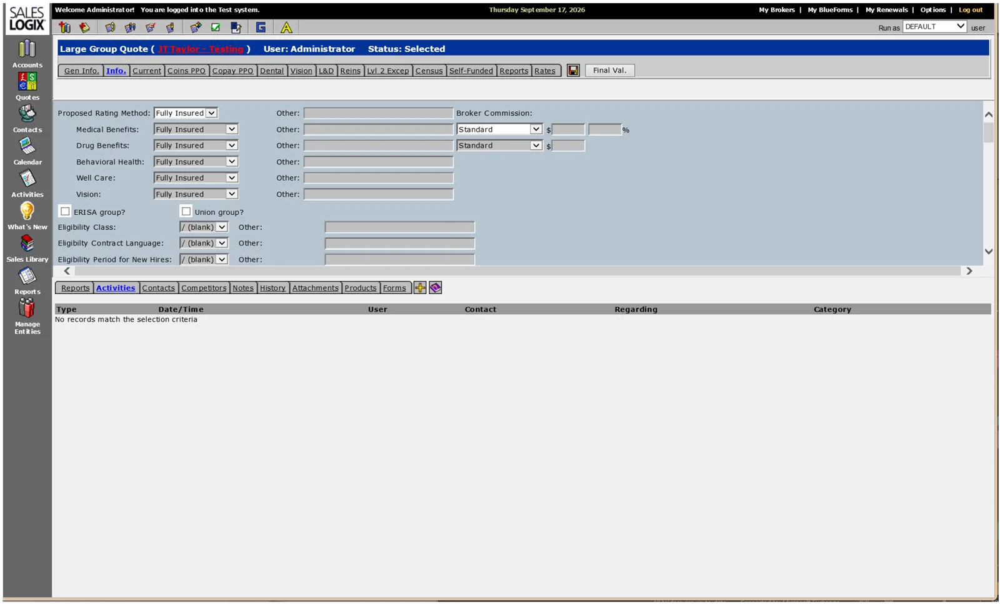
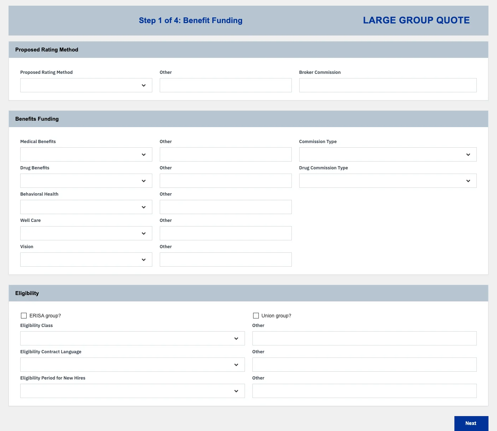
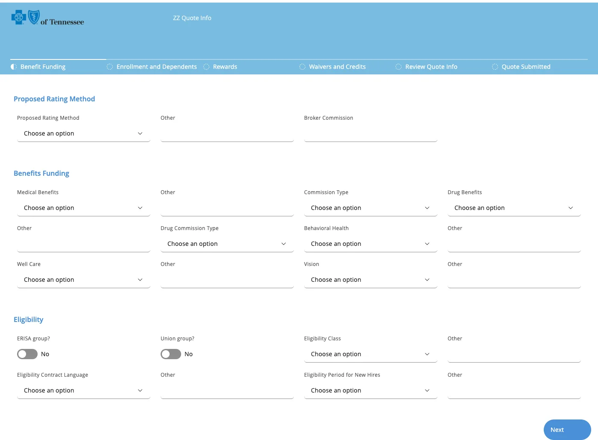
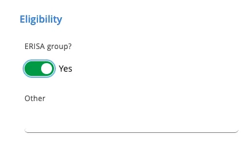
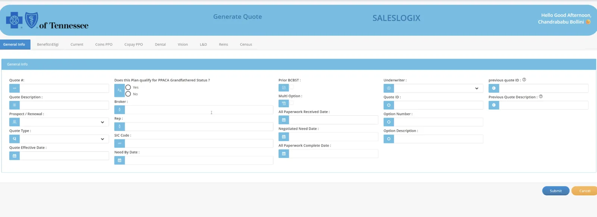
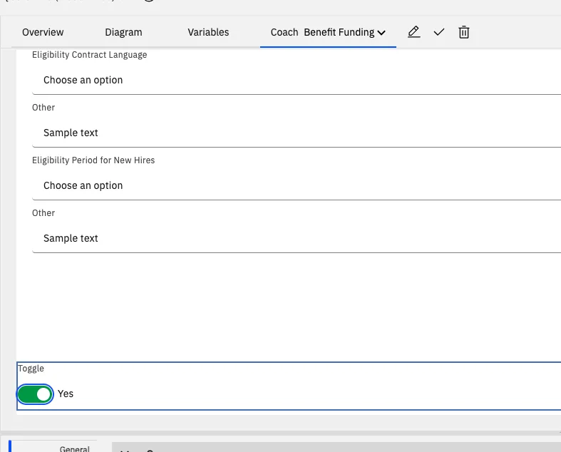

IBM Bob × BAW Dev Tools MCP · demo script
The Quote screen as reusable BAW widgets.
Bob turns pictures of an old CRM screen into a BAW app built from small widgets in a toolkit: first the classic way, then with React and Carbon. Along the way it writes a new widget, live.
- 60
- min
- 2
- acts
- 15
- tools
- 2
- toolkits
- 1
- new widget




T−30 00:00
Run of show, then the prep.
Run of show
- OpeningWhere we left off, and today's goal
- How it worksTwo widget toolkits, and how Bob uses them
- Act 1: the classic screenPictures in; a BAW app built from small classic widgets out; drag one in Coach Designer
- Act 2: modern, with a new widgetOne request: React + Carbon screens from small widgets, plus a new Toggle widget in the toolkit
- Safety and questions
- Next stepsWhich widgets the team wants next
Before the meeting Thirty minutes before
- Check the BAW login file (
.env) is filled in. Never show it on screen. - Get the latest project (
git switch main && git pull). Open it in Bob; the tools panel shows baw-dev-tools with 15 tools. If it shows fewer, restart baw-dev-tools in that panel. - Make sure the Toggle does not exist yet, so Bob creates it live. Run
git statusand check that these are absent:coach-ui/src/widgets/toggle.jsx,coach-ui/src/widgets/toggle.scss,coach-ui/widgets/icons/toggle.svg- a
"kind": "toggle"entry incoach-ui/widgets/modernizer-widgets.json
git statusis clean and the rehearsal check (only the new Toggle files changed) is easy to read. After a rehearsal, reset with:Terminal rm -f coach-ui/src/widgets/toggle.jsx coach-ui/src/widgets/toggle.scss coach-ui/widgets/icons/toggle.svg git checkout -- coach-ui/widgets/modernizer-widgets.json - Keep
screenshots/Quote/as it is: the six pictures of the old screen (image (1).pngtoimage (6).png) and the client's newer quote screen (generate-quote.png). It stays on this laptop and is never published. - Note the names already taken on the server, so a “version already exists” message is no surprise:
- App Builder Widgets (ABW): up to 1.0.4
- Modernizer Widgets (MDW): up to 1.7.0, so Bob's new widget goes into 1.8.0 or later
- The Quote app ZZQI: v1.0 to v3.0 and test snapshots such as
p7-toggle
- Do one full rehearsal, so you know how long each step takes. Keep the rehearsal app as a backup.
- Open Business Automation Studio in a second browser tab.
- In Bob, pick the 🏗️ BAW App Builder mode. Allow mode switches in Bob's auto-approve settings. Make the font bigger.
- Afterwards, ask a BAW admin to archive the test snapshots: Bob cannot delete anything.
00:00 03:00 10:00
Two toolkits of small widgets.
Bob builds every screen from small BAW views that live in a toolkit, and installs the toolkit before the app that needs it.
Say · opening, 3 min
- “Last time Bob rebuilt your quote screen from pictures, and gave it a modern look. You asked for one change: break the screen into smaller, reusable pieces in a toolkit, so your developers can manage them in BAW.”
- “Today we build the same screen twice from small widgets: once in the normal BAW style, once with React and Carbon.”
- “And because the old screen has something no stock widget does well, Bob will write a brand-new widget during the demo and put it in the toolkit.”
Do Show the toolkit diagram.
Say
- “In BAW, a screen is called a coach, and its building blocks are called views. A view that lives in a toolkit can be reused by every app that depends on that toolkit, and it shows up in Coach Designer's palette.”1
- “We give Bob two toolkits of small widgets.”
| Toolkit | Built with | Widgets | Used by |
|---|---|---|---|
| App Builder Widgets (ABW) | Classic BAW, no framework | Theme, App Header, Section, Review List, Button Bar, around the standard BAW inputs | The classic screen (Act 1) |
| Modernizer Widgets (MDW) | React + Carbon | Theme, Header, Error Summary, Text Field, Text Area, Number Field, Date Field, Checkbox, Select, Radio Group, Button | The modern screen (Act 2) |
Say
- “Each widget is a normal BAW view. It binds to a BAW variable, and it honours BAW's own settings: required, read-only and hidden.”4
- “Each widget has a palette icon and a live preview on the Designer canvas, so a developer can drag it, drop it and see it change.”3
- “An app depends on one version of a toolkit. A new widget means a new toolkit version. Apps that already use an older version keep it until someone moves them.”2
Say
- “Bob has 15 tools and two roles. The ones that change something ask first.”
| Role | What it does today |
|---|---|
| 🏗️ BAW App Builder | Turns pictures or a request into a working app, built from App Builder Widgets |
| ✨ BAW Coach Modernizer | Gives an app a React + Carbon copy of its screens, built from Modernizer Widgets. It can also add a new widget to that toolkit when the plan needs one |
Say
- “A new widget is three small files: the React component, one entry in the toolkit's list, and its palette icon. Bob checks it in a browser before it builds the toolkit.”
- “Bob can add widgets, but it may not change an existing one. Other apps depend on those, so changing one is a developer's job, done on purpose.”
- “Bob stops twice by itself: it shows us the plan before building, and it asks before installing anything on BAW.”
Do Open Bob's tools panel and show baw-dev-tools with its 15 tools, including build_widget_toolkit.
10:00 25:00
Act 1. The classic screen.
Pictures in; a BAW app built from small classic widgets out.
Build a ZZ app from the screenshots in screenshots/Quote, image (1).png to image (6).png. They show one long page, scrolled, so some parts appear twice. Build it from App Builder Widgets. Install it, test it and compare the result with the screenshots.Step 1. Show the old screen
Do Flip through the six pictures: one long “Info” tab of a quote in an old CRM, captured while scrolling. Point at the drop-down lists and the yes/no checkboxes (ERISA group?, Union group?, Reinsurance Declined). We come back to those in Act 2.
Say
- “All we have is pictures. The pictures are the requirement.”
Step 2. Ask Bob to rebuild it
- Opens each picture and reads the screen: sections, columns, drop-downs, checkboxes, required fields. Reads the colours.
- Writes a short description of the screen, then stops and shows us the design.
- Picks the App Builder Widgets toolkit already on the server, or builds and installs a new version of it first.
Do Scroll through the design summary. Answer: “Approved.”
Say, while it works
- “Bob reads the pictures the way a developer would.”
- “Watch the order: toolkit first, then the app that depends on it.”
Step 3. Build, install and test
- Builds the app (
create_app) from App Builder Widgets. - Asks before installing. Answer yes.
- Opens it in a real browser, clicks through every screen, takes a picture of each and compares them with the originals.
Do Show Bob's test picture next to the old screen.
Say
- “About 60 fields in 4 steps, the same layout and colours. This time the screen is not one big block: each section, the header and the button bar are widgets from the toolkit.”
Step 4. Open it in Coach Designer
In Business Automation Studio, open the new app, the Quote Info service, then a coach.
- Click a section: the properties panel shows an App Builder Widgets view called Section, with its own options.
- In the palette, search “App Builder”: Theme, App Header, Section, Review List and Button Bar appear with their icons.
- Drag a field from one section into another, then undo.

Say
- “These are ordinary BAW views in a toolkit. Your developers can move them, change their options, and reuse them in other apps.”
- “Nothing here needs Bob any more. Bob got us here fast; BAW owns the result.”
25:00 50:00
Act 2. Modern, with a new widget.
One request: React + Carbon screens from small widgets, plus a new Toggle in the toolkit.
Give the app you just built a React UI with IBM Carbon, from Modernizer Widgets. Lay it out like screenshots/Quote/generate-quote.png: the fields in tabs by section, four columns, the client's blue from that screen on a white page, Submit and Cancel at the bottom right. Show the yes/no questions (ERISA group?, Union group?, Reinsurance Declined) as a Carbon toggle switch with Yes and No. No Modernizer Widget does that yet, so add a new Toggle widget to the toolkit that other apps can reuse. Show me the plan before you build.Approved. Build it, install it and test it.(files)write the Toggle(offline check)test every widgetbuild_widget_toolkitnew MDW versioninstall_apptoolkitmodernize_appmodern screensinstall_appapptest_serviceevery screen
the new Toggle Bob asks you
Step 1. Show the target look
Do Open screenshots/Quote/generate-quote.png, the client's newer quote screen. Point at the tabs, the four columns and the buttons at the bottom right. Then go back to the classic screen and point at the three yes/no checkboxes. Stay in the same chat.

Say
- “A checkbox is a poor fit for a yes/no question. A switch reads better, and nobody has one in the toolkit yet.”
Step 2. One request: modernize, and create the widget
Say
- “One request, five parts: what we want, what to work from, how it should look, the new widget, and where to stop.”
- Switches to its second role, the Modernizer, by itself.
- Reads the app it just built, and reads the blue from the client's screen.
- Plans the tabs and columns, and lists the new Toggle widget: it saves one yes/no value, has On text and Off text options, and is used by the three questions.
- Stops and shows us the plan.
Say, while it works
- “The widget is part of the plan, so we approve the screen and the new widget together.”
Step 3. Build it
| Order | Bob's step | Tool |
|---|---|---|
| 1 | Writes the Toggle: its React component with Carbon's toggle, its Carbon styles, one entry in the toolkit's list, and a palette icon | (files) |
| 2 | Checks every widget in a browser, the new one included | (offline check) |
| 3 | Builds a new Modernizer Widgets version that contains the Toggle | build_widget_toolkit |
| 4 | Asks before installing the toolkit. Answer yes | install_app |
| 5 | Builds the modern screens from the widgets, with toggles on the three questions | modernize_app |
| 6 | Asks before installing the app. Answer yes | install_app |
| 7 | Tests every screen in a real browser | test_service |
Say, while it works
- “Bob is writing a real BAW widget, not a picture of one. It uses IBM's Carbon toggle, which is meant for exactly this: an on/off choice that takes effect at once.”5
- “It tests the widget before it builds the toolkit, so a broken widget never reaches BAW.”
- “The toolkit gets a new version. Nothing that uses the old version changes.”
Step 4. The reveal: run it
Step 4. The reveal: Designer
- Open the modernized coach in Coach Designer. In the palette, search “Modernizer”: the Toggle is there with its icon, next to the stock widgets.
- Drag a Toggle onto another tab. Its preview shows a switch at once. In its Configuration tab, show On text and Off text. Bind it to a yes/no variable and run it.



Say
- “Twenty minutes ago this widget did not exist. Now it is in your toolkit, with an icon, a preview and options, like IBM's own.”
- “The old screen is still there next to the modern one, so nothing is lost. The process behind it has not changed.”
50:00 57:00
Safety, questions and next steps.
Tick each rehearsal check as it passes. The page remembers them; copy the results when you are done.
checks passed
| Safety rule | Why it matters |
|---|---|
| A person approves every change | Bob stops before building and before installing |
| Every install is a new version | Nothing is overwritten; you can always go back |
| Bob adds widgets, never changes existing ones | Apps that depend on a widget keep working |
| A new widget is tested before the toolkit is built | A broken widget never reaches BAW |
| Bob cannot delete anything | No tool for it exists |
| The password stays in the connector | Bob never sees it |
- Are these real BAW views?
- Yes. Each widget is a Coach View in a toolkit, with a binding, configuration options, a palette icon and a design-time preview.1
- Can our developers change a widget themselves?
- Yes, like any view in a toolkit. A change becomes a new toolkit version, and each app moves to it when you choose.2
- Can Bob change an existing widget?
- Only when asked, in its general coding role, as a code change a developer reviews. The Modernizer may only add.
- Why is the Toggle green?
- That is Carbon's standard colour for “on”.
- Which widgets can Bob create?
- Any widget that saves one value: text, number, date or yes/no. Widgets that save several values at once, such as a drop-down with its own “Other” box, are the next step.
- Does the modern screen still use BAW data and rules?
- Yes. Every widget is bound to the app's own variables, and BAW's required, read-only and hidden settings apply.4
- Can other AI assistants do this?
- Yes. The connector follows the open MCP standard, so any assistant that supports MCP can use the same 15 tools.6
| Problem on stage | What to do |
|---|---|
| Bob's tools panel shows 0 tools | Restart baw-dev-tools in that panel |
| “Login failed” | Check the login file off screen; switch to the rehearsal app meanwhile |
| “Snapshot already exists” | Let Bob pick the next version: that is a safety rule working |
| Bob uses a Checkbox instead of a new widget | Say: “No, add a new Toggle widget to Modernizer Widgets for those three questions.” |
| The new widget fails its check twice | Bob falls back to the stock Checkbox and finishes. Carry on; show the Toggle in the rehearsal app instead |
| The Toggle is missing from the palette | The app still uses the old toolkit version; ask Bob which Modernizer Widgets version the app depends on |
| An install is slow | Talk through the toolkit diagram while it runs |
Ask the client, and write the answers down:
- Which parts of your screens should become widgets in your own toolkit?
- Should the toolkit follow your brand, or stay with Carbon's defaults?
- Which widgets need to save several values at once (for example a choice with its own “Other” box, or the broker commission's type, dollars and percent)?
- Who on your team will own the toolkit, and how should new versions reach your apps?
- Which screen comes next?
Say
- “In one hour: pictures became a BAW app built from small, reusable widgets, then a modern version from React widgets, and Bob added a widget your developers can use anywhere. Every step was tested in a browser and approved by a person before it reached BAW.”
Project: https://github.com/unclethien/baw-bob-dev-tools-mcp (Apache-2.0). Not an official IBM project; use it with test servers and test apps.